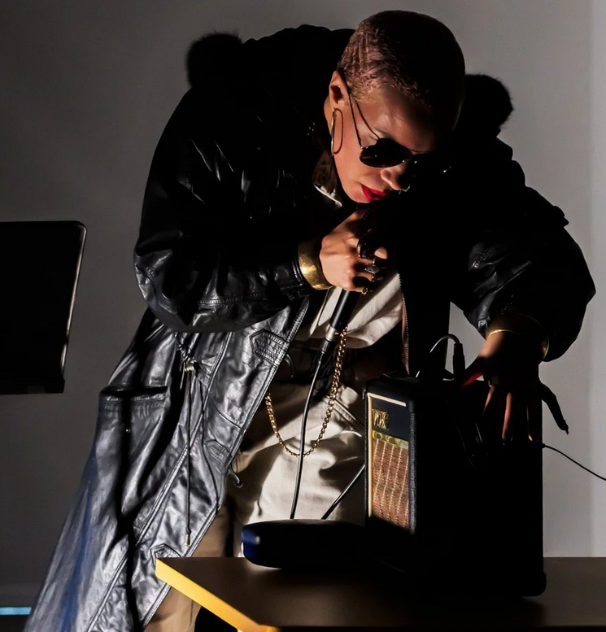

Rashayla Marie Brown: The End(s) of Suffering
Performance by Rashayla Marie Brown on March 7, 2026; Saturday @7:00pm
The End(s) of Suffering
Rashayla Marie Brown (RMB)
Duration: 30 Mins
RMB will compose a vocal landscape inspired by Greg Bae’s scroll and friendship-building practices in general, using a microphone and looper with her own voice. This performance will incorporate gestures and elements of ancestral veneration from a variety of traditions of which RMB is a practitioner, including Buddhism and Lucumí.
About the exhibition
Carrier is a group exhibition centered on a sixty-foot-long paper and tape collage scroll by the late Chicago-based Korean-American artist Gregory Bae. The work was created from non-alphabetical printed elements, such as punctuation marks and technical graphics, cut from radio instruction manuals. Carrier brings together a group of primarily Chicago-based artists, several of them collaborators and friends of Bae, to respond to the scroll.
Structured around a “score” developed by the curators, the exhibition invited the artists to engage with the scroll as a prompt: something to be read, misread, translated, withheld, or activated. The works exhibited consider how meaning is formed through fragments, omissions, and margins — elements that are often present but overlooked.